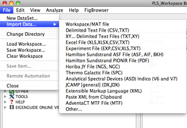
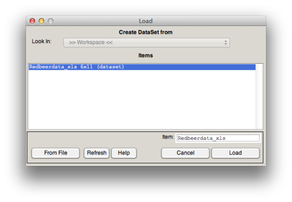

Table of Contents | Previous | Next
Importing Data into the Workspace Browser or Analysis Tool
To carry out an analysis, the first thing that you must do is import data for analysis. Two options are available for importing or loading data:
Although both of these options are available to you, after you import data, certain functions or actions are easier to carry out in the Workspace Browser than within an Analysis tool. Likewise, importing data directly into an Analysis tool may reduce the amount of memory required to perform an analysis. In both cases, the importing procedure is similar.
Because Solo supports the importing of many different file types and the analysis of many different data types, the requirements for importing data into the Workspace Browser depend on the data source. For example, a single Excel file typically has multiple rows and multiple columns and therefore, typically contains all of the data that you need to import for analysis. An X,Y delimited text file, on the other hand, is usually analogous to a single row in an Excel file, and therefore, you might need to import multiple data files and assemble them into a single data object for analysis. Out of all the file types that you can import into Solo, the native MATLAB file format (a binary format) is the format that can be read the fastest by Solo and that requires the least disk space for storing. As a result, after you import a file, Eigenvector recommends that, regardless of the original file format, you save the imported data to the native MATLAB file format (i.e., a .mat file).
Note: The .mat file that is created is compatible with version 6.5 or later of MATLAB.
When you import data items into the workspace, be aware of the following:
- Although Solo places no restrictions on the number of items that you can import into the base workspace, memory is allocated to the loaded items. Having an excessive number of items loaded in the base workspace can limit the application's ability to carry out certain analyses.
|
- The steps for importing a .mat file are slightly different than the steps for importing other allowed file types. See:
|
To import a .mat file
Note: In Workspace Browser, you use the "Import Data" option to select a .mat file for importing. The term "Import" is typically used in reference to any file other than a .mat file, while the term "Load" is used in reference to a .mat file (because .mat files are the default file format for Solo). In this context, the two terms refer to the same action and are used interchangeably.
Note: In the Analysis window, the "File > Load Data" menu item is the same as using "File > Import Data" and choosing "Workspace/MAT" file.
| 1.
|
Analysis Window - On the main menu, click File > Load Data and choose which block of data you are importing the data into. Then skip to step 3.
Workspace Browser - On the main menu, click File > Import Data
|
- A list of available file types that you can import opens. The first option in the list is the Workspace/MAT file option.
- List of available file types
- 
| 2.
|
Click Workspace/MAT file.
|
- The Load dialog box opens. By default, this dialog box references the currently opened workspace, and therefore, lists all of the items that are currently loaded in the workspace.
- Load dialog box
- 
- The button now shows From Workspace. The dialog box is refreshed to show the .mat file that was last loaded and all of the items contained in the .mat file.
- Note: In MATLAB, an item is called a variable, and it is the type of data that can be stored in a .mat file. An item can be a DataSet, a matrix, a character array, and so on. Although this documentation uses the term "item," the term "variable" is used on various windows and dialog boxes and in some lists in Solo. Multiple variables, DataSet objects, and so on can be stored in a single .mat file.
- Save dialog box

| 4.
|
If needed, in the Look In field, change to the directory from which you are importing the .mat file.
|
| 5.
|
In the Files column, select the .mat file that you are importing.
|
| 6.
|
Do one of the following:
|
- If the .mat file contains a single variable, click Load.
|
- If the .mat file contains more than one variable, then by default, the first variable in the list is selected. Click Load to import this variable, or select a different variable, and then click Load.
|
- If the .mat file contains more than one variable, to import all variables, click All, and then click Load. Click Yes at the prompt to load all variables, and then click Load again.
|
- The selected data files are loaded into the Workspace Browser. After you import the data, different icons are displayed in the Workspace Browser for the different data types. You can save these data items to a workspace, and you can manipulate this data in the browser before you analyze it. See Icons in the Workspace Browser.
Note: If you select the All option through the Workspace Browser, then all of the variables are loaded into the base workspace. If you select the All option in an Analysis tool, then all of the variables are loaded into the base workspace. You are then pointed at the base workspace and prompted to select one of the variables that you just loaded.
To import a data file (other than a .mat file)
| 1.
|
On the main menu, click File > Import Data.
|
- A list of available file types that you can import opens.
- List of available file types
| 2.
|
Select the type of file that you are importing.
|
| 3.
|
In the Open <File Type> dialog box, scroll to and select the file that you are importing.
|
- Workspace Browser: The data is imported into the Workspace Browser. After you import the data, different icons are displayed in the Workspace Browser for the different item types. You can save these data items to a workspace, and you can manipulate this data in the browser before you analyze it. See Icons in the Workspace Browser.
- Analysis Tool: The data is imported into the indicated block in Analysis and the status pane shows the data as loaded.
Note: Remember, the native MAT file format is the format that can be read the fastest by Solo and that requires the least disk space for storing.
To save imported data to a .mat file
| 1.
|
Do one of the following:
|
Workspace Browser
- Click the icon for the data that you are saving, and then on the main menu, click File > Save.
|
- Right-click the icon for the data that you are saving and on the context menu that opens, click Save.
|
Analysis Window
- Choose the appropriate sub-item in the main menu: File > Save Data.
|
- Right-click the icon in the status pane for the data that you want to save and on the context menu that opens, click Save.
|
- The Save dialog box opens. This dialog box shows the .mat file that was last loaded and all of the items contained in the .mat file.
- Note: In MATLAB, an item is called a variable, and it is the type of data that can be stored in a .mat file. An item can be a DataSet, a matrix, a character array, and so on. Although this documentation uses the term "item," the term "variable" is used on various windows and dialog boxes and in some lists in Solo. Multiple variables, DataSet objects, and so on can be stored in a single .mat file.
- Save dialog box
| 2.
|
Specify a location in which to save the data file and the name for the data file.
|